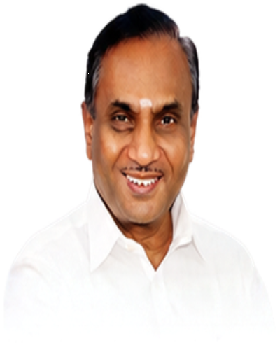
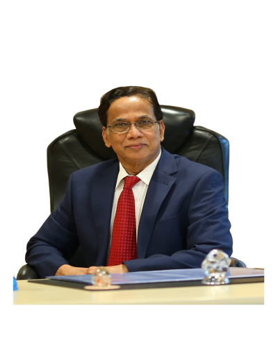
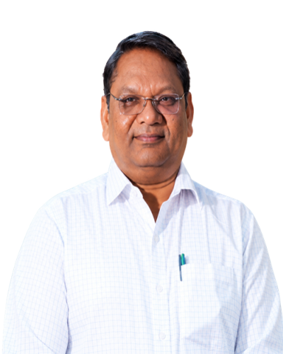

Medical, dental and nursing education in Mahabubnagar since 1999.
Where learning meets care
SVS Medical College, Yenugonda, Mahabubnagar
SVS Medical College was established in 1999 by Sri Venkata Sai Educational Society, bringing medical education and a teaching hospital to Mahabubnagar.
SVS Medical College followed in 1999. Its MBBS degree was first affiliated to Dr. NTR University of Health Sciences, Vijayawada, and the college is now affiliated to Kaloji Narayana Rao University of Health Sciences (KNRUHS), Warangal. Postgraduate MD/MS courses began in 2005 and now span clinical, para-clinical and pre-clinical departments.
Today, teaching and treatment share one campus at Yenugonda. The teaching hospital has more than 1,000 beds across 39 clinical units, so students learn at the bedside from their early years. The group’s dental and nursing colleges sit alongside, each with its own campus, clinics and hostels.
1997Society founded
1999Medical college established
2005MD/MS courses begin
1,000+Teaching beds
Sri Venkata Sai Educational Society
Sri Venkata Sai Educational Society was established in 1997 by a group of dedicated people who hail from villages near Mahabubnagar, with the noble objective of serving the educational and healthcare needs of the people of Mahabubnagar District, one of the backward and underserved regions of the state.
The primary aim of the Society was to establish quality medical and health science institutions and to provide accessible healthcare facilities to the rural and economically weaker sections of society. Since its inception, the Society has been committed to academic excellence, medical education, patient care and community service.
What the Society set out to do
01
Serve Mahabubnagar
Meet the educational and healthcare needs of the people of Mahabubnagar District, one of the underserved regions of the state.
02
Build quality institutions
Establish medical and health science colleges that hold to high academic standards.
03
Make care accessible
Provide healthcare that rural families and economically weaker sections of society can reach.
04
Stay committed
Keep academic excellence, patient care and community service at the centre of everything the society does.
Message from the Chairman

Prof. A. KanakarajMA, M.PhilChairman, SVS Educational Society
“Knowledge comes from learning. Wisdom comes from living.”
Dear Students,
It gives me immense pleasure to welcome you to the SVS Educational Society family. You are stepping into an institution defined by deep commitment, academic rigour and a legacy of excellence. SVS brings together educational infrastructure and clinical learning under one umbrella, fostering an environment where both faculty and students thrive.
As you begin your medical career, dedicate yourselves to continuous learning, integrity and ethical practice. Strive not only to acquire medical knowledge, but to cultivate the empathy and wisdom required of great physicians.
Message from the Managing Director

Dr. K. J. ReddyMS (Ortho-PGI), FRCS (Edin), DNB, FRCS (UK)Managing Director, SVS Group of Institutions
“Knowledge is power.”
Dear Students,
Nurturing creativity and inspiring innovative ideas is an art practised by minds that are efficient, compassionate and logical. SVS Educational Society is built on more than two decades of history, during which it has grown into a centre for medical education and healthcare delivery.
This journey was made possible through the dedicated efforts of the Board of Governors and the hard work of our faculty. In choosing SVS Medical College, you have entered a place equipped to train you into competent medical professionals. Make the best use of our hospital facilities, clinical mentors and academic community.
Message from the Principal

Dr. Krishna Prakash JoshiMD, FAIMERPrincipal, SVS Medical College & Hospital
“If we did the things we are capable of, we would astound ourselves.” Thomas Edison
Dear Future Doctors,
It gives me immense pleasure to welcome you to SVS Medical College as you embark on the noble path of medicine. The MBBS course is a challenging yet deeply fulfilling journey that asks for diligence, dedication, empathy and continuous learning.
Make full use of the clinical exposure, the mentor–mentee framework, the library and the interactive learning opportunities available to you. Maintain discipline, follow ethical codes of conduct, and approach every patient with humility and respect. I wish you an inspiring, successful and transformative journey at SVS Medical College.
Message from the SVS Institutional Core Committee
SVS-ICC
Welcome to SVS Medical College! The SVS Institutional Core Committee is committed to fostering a safe, inclusive, student-friendly and academically enriching environment. We believe that excellence is achieved when we work together with integrity, respect, compassion and a shared commitment to continuous improvement.
Our endeavour is to nurture a supportive and inspiring campus where every student is empowered to realise their potential, develop professional values, and become a competent and compassionate doctor.
Together, let us build a stronger SVS and shape a healthier tomorrow.
SVS-ICC — One Vision. Shared Values. A Better Future.